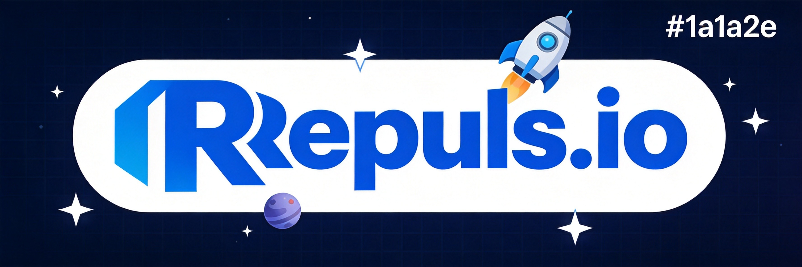
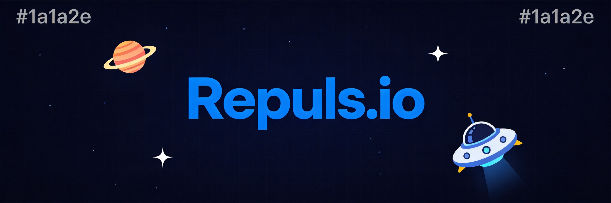

What鈥檚 up, squad! Today we鈥檙e diving deep into Repuls.io, the undisputed king of browser FPS games. Everyone in the Discord argues about which weapon actually carries games. Is it the raw DPS of the Minigun? The burst damage of the Rocket Launcher? Or is the Grappling Hook actually the secret meta? I spent the last 48 hours sweating in hardcore mode, testing every single primary weapon archetype to see what actually wins 1v1s and pushes objectives. I鈥檓 not giving you any wishy-washy 'it depends' garbage. I鈥檝e got the data, I鈥檝e got the kill-death ratios, and I鈥檓 going to tell you exactly what to equip. If you鈥檙e tired of getting melted before you even spawn, watch this ranking. Let鈥檚 get into it!
Repuls.io in action
At a Glance
Rank
Name
Key Stats
Verdict
#1
Minigun 鈥?The Bullet Hose
Fires at 900 RPM with a 120-round magazine. Deals 14 damage per bullet...
A hyper-aggressive room-clearing tool that turns you in...
#2
Rocket Launcher 鈥?The Boomstick
Fires a 110-damage explosive projectile with a 2.5-second reload. Spla...
Devastating for zone control and vehicle hunting, but t...
#3
Sniper Rifle 鈥?The Railgun
Deals 150 damage on a body shot and 300 on a headshot. Has a 1.2-secon...
The undisputed king of long-range picks, but utterly us...
#4
Repuls Launcher 鈥?The Movement God
Pulls you to surfaces at 40 meters per second or pushes enemies back 1...
The most skill-expressive tool in the game that dictate...
#5
Melee Strike 鈥?The Panic Button
Deals 65 damage per swing with a 0.8-second windup. Grants a 10% movem...
A desperate last resort for out-of-ammo panics, but pic...
The Contenders
Minigun 鈥?The Bullet Hose
Fires at 900 RPM with a 120-round magazine. Deals 14 damage per bullet, but suffers a 25% mobility penalty while aiming down sights.
鉁?The Minigun is the ultimate close-quarters shredder. When you鈥檙e pushing a choke point or clearing out a building, nothing beats the sheer volume of fire. It completely suppresses enemies, making it impossible for them to peek without eating lead. In vehicle warfare, hopping into a transport and laying down covering fire with this beast is a game-changer. It also synergizes perfectly with the repulsion launcher; push an enemy back with your ability, then track them with the Minigun鈥檚 massive hitbox. It melts armor in under two seconds at point-blank range, making it the undisputed king of aggressive, in-your-face combat.
鉁?Let鈥檚 be real, the Minigun is a one-trick pony. The moment you step past 30 meters, your damage drops off a cliff, and you鈥檙e just tickling snipers. The 25% mobility penalty while aiming means you鈥檙e a sitting duck if you get flanked. It also guzzles ammo, meaning you鈥檙e constantly hunting for supply drops or using your 'E' key to scavenge while your teammates are actually fighting. If a Rocket Launcher user catches you reloading or repositioning, you鈥檙e dead. It requires flawless map knowledge and constant aggression; if you hesitate for even a second, you get punished.
A hyper-aggressive room-clearing tool that turns you into a walking turret, but gets you killed if you miss a single step.
Rocket Launcher 鈥?The Boomstick
Fires a 110-damage explosive projectile with a 2.5-second reload. Splash damage radius is 8 meters, dealing up to 60% falloff at the edge.
鉁?The Rocket Launcher is all about area denial and burst damage. You don't need pinpoint aim; you just need to predict where the enemy is walking. Hitting a clustered group of players with a single rocket can instantly swing a team fight. It鈥檚 also the only reliable way to destroy enemy vehicles in a single hit if you aim for the engine block. In open-world maps, controlling sightlines with explosive splash damage forces enemies out of cover, setting up your squad for easy follow-up kills. It鈥檚 the ultimate equalizer, allowing you to delete heavily armored RPG veterans from full health in just two direct hits.
鉁?The projectile speed is painfully slow. If you鈥檙e fighting a mobile player using the Grappling Hook, they will literally dodge your rockets in mid-air. The 2.5-second reload is an eternity in a fast-paced arena; if you miss your first shot, you are completely defenseless while you cycle the next round. It鈥檚 also terrible for close-quarters combat. If a Minigun user pushes you, trying to land a point-blank rocket is basically suicide. Plus, the massive splash radius means you can easily kill yourself or your teammates if you aren't careful with your positioning around corners.
Devastating for zone control and vehicle hunting, but the slow projectile and brutal reload window make it a high-risk, high-reward gamble.

How they stack up
Sniper Rifle 鈥?The Railgun
Deals 150 damage on a body shot and 300 on a headshot. Has a 1.2-second scope-in delay and a 3-shot magazine before a 2-second reload.
鉁?The Sniper Rifle is the ultimate long-range punisher. A single headshot deletes any non-tank build instantly, making it the best weapon for picking off isolated targets. The right-click aim down sights gives you incredible field-of-view clarity, letting you spot enemies pushing across open fields. It completely shuts down aggressive Minigun players who try to sprint across no-man's-land. When paired with high-ground advantage, you become an untouchable ghost, racking up kills without ever exposing yourself to return fire. It鈥檚 also highly ammo-efficient, meaning you spend less time scavenging and more time controlling the map's sightlines.
鉁?If an enemy closes the distance, you are completely dead. The 1.2-second scope-in delay is too slow for reactive close-quarters combat, and the 3-shot magazine means you can easily whiff and find yourself empty when they push. It offers zero utility in vehicle warfare unless you're just sniping drivers, which is incredibly difficult. You also become entirely dependent on your team to hold the frontline; if your squad gets wiped, you have no escape tool and will get swarmed. It鈥檚 a highly situational weapon that falls apart the second the enemy team coordinates a flank.
The undisputed king of long-range picks, but utterly useless if the enemy team actually knows how to use cover and push together.
Repuls Launcher 鈥?The Movement God
Pulls you to surfaces at 40 meters per second or pushes enemies back 15 meters. 6-second cooldown. Deals 20 damage on a direct push hit.
鉁?This isn't just a weapon; it鈥檚 the core mechanic that defines Repuls.io. The Repuls Launcher gives you unmatched verticality and map control. You can grapple to rooftops to escape bad fights, or push enemies off high ledges for instant environmental kills. In a 1v1, the ability to instantly close a 15-meter gap or create distance is priceless. It completely invalidates the Sniper Rifle鈥檚 range advantage because you can just grapple onto their building. It also synergizes with grenades; push an enemy into the air, then drop a grenade at their feet. It鈥檚 the ultimate utility tool that keeps you alive longer than any armor perk.
鉁?The 20 damage on a direct hit is practically a tickle. If you rely solely on the Repuls Launcher for damage, you will lose every single gunfight. The 6-second cooldown is also a massive liability; if you use your push to escape and it鈥檚 on cooldown, you have zero mobility when they counter-engage. It requires incredibly high game sense and map knowledge to use effectively. Beginners will just use it to run away, wasting its offensive potential. Without a strong secondary weapon equipped, you are just a highly mobile target that dies in three hits.
The most skill-expressive tool in the game that dictates the flow of combat, but it requires a lethal secondary weapon to actually secure kills.
Melee Strike 鈥?The Panic Button
Deals 65 damage per swing with a 0.8-second windup. Grants a 10% movement speed boost during the swing animation.
鉁?Melee is the ultimate 'Hail Mary' when your ammo runs dry. The 10% movement speed boost during the windup is a hidden gem, allowing you to dodge rockets or close the gap on a fleeing sniper faster than walking. It鈥檚 also completely silent, making it viable for stealthy flanks if you manage to get behind an enemy who is sniping or reloading. In the chaotic vehicle warfare moments where you get knocked out of your ride, a well-timed melee strike can save your life by deleting a low-health enemy before they can react. It costs zero ammo and is always ready.
鉁?Let鈥檚 not kid ourselves, melee is the worst primary option. The 0.8-second windup means you will get shot in the face by a Minigun before your blade even connects. You have to be within 3 meters to hit, which is basically suicide in this game. It offers zero range, zero splash damage, and zero utility. If you are forced to use melee as your main source of damage, you鈥檝e already lost the fight. It鈥檚 strictly a tool of desperation. Relying on it means you鈥檙e ignoring the massive arsenal of actual firearms that can kill from 50 meters away.
A desperate last resort for out-of-ammo panics, but picking this as your main strategy is a guaranteed way to feed the enemy team.
The Rankings
#1 MinigunRank 1 of 5
#2 Rocket LauncherRank 2 of 5
#3 Sniper RifleRank 3 of 5
#4 Repuls LauncherRank 4 of 5
#5 Melee StrikeRank 5 of 5
Alright, here is my definitive ranking from worst to best. At number five, we have the Melee Strike. It鈥檚 a fun panic button, but let鈥檚 be real, if you鈥檙e relying on a knife in a game with rocket launchers, you鈥檙e just playing for the highlight reel deaths. Number four is the Sniper Rifle. I know the snipers are going to hate this, but it鈥檚 too one-dimensional. If the enemy team pushes you, you鈥檙e dead. It鈥檚 overrated for solo queue. Number three is the Rocket Launcher. It鈥檚 incredibly fun and great for vehicles, but the slow projectile and brutal reload make it too inconsistent for top-tier play. Number two is the Repuls Launcher. This is the hidden gem of the game. It doesn't do much damage, but it completely breaks the game's movement mechanics. If you master the grapple, you control the engagement. But the undisputed number one is the Minigun. It just works. The sheer DPS, the suppression, the ammo pool鈥攊t forces the enemy to play your game. It鈥檚 the most reliable, consistent weapon in the arsenal.
Who Should Pick What
If you're a beginner learning the maps
Go Minigun
You don't need perfect aim to get value. The massive hitbox and high fire rate will teach you map control and positioning while still letting you secure kills without pixel-perfect tracking.
If you love high-skill aggression
Pick the Repuls Launcher
Mastering the grapple gives you unmatched verticality. You can dictate every 1v1 engagement, escape bad fights, and set up environmental kills, heavily rewarding your mechanical skill.
If you play support and love vehicles
Equip the Rocket Launcher
It鈥檚 the only reliable way to one-shot enemy transports and aircraft. You鈥檒l be the MVP of your squad by shutting down their vehicle warfare and controlling choke points.

The final verdict in action
The Bottom Line
At the end of the day, the Minigun takes the crown in Repuls.io. While the Repuls Launcher is the most fun and skill-expressive tool, the Minigun is the ultimate equalizer that wins games through sheer, undeniable firepower. It forces enemies to respect your space and melts through health bars before they can react. Stop trying to be a ninja with the melee or a ghost with the sniper. Grab the Minigun, push the frontline, and let the bullet hose do the talking. Trust me, your K/D ratio will thank you.
Our Verdict
Repuls.io takes the snappy, low-poly browser FPS formula and injects it with Titanfall-level movement mechanics and vehicle combat. Mastering the physics-based grappling hook completely changes the game from a standard hallway shooter into a high-octane 3D arena experience. It鈥檚 easily one of the most mechanically deep shooters currently running in a browser.
鈽呪槄鈽呪槄鈽?/span>
5/5
Similar Games You Might Enjoy
Krunker.io 鈥?The undisputed king of browser FPS that shares the same snappy, low-poly hitscan gunplay and slide mechanics.
Venge.io 鈥?Offers a similar fast-paced arena shooter experience but focuses more on card-based abilities and hero mechanics.
Ev.io 鈥?A highly mobile arena FPS featuring advanced movement tech like double jumps and dashes that appeal to skill-shot lovers.
How It Compares
Game
Difficulty
Learning Curve
Player Base
Best For
Repuls.io
鈽呪槄鈽呪槄鈽?/td>
Steep
Medium
Movement FPS veterans
Krunker.io
鈽呪槄鈽呪槅鈽?/td>
Moderate
Large
Competitive snipers
Venge.io
鈽呪槄鈽呪槅鈽?/td>
Moderate
Large
Casual arena shooters
Ev.io
鈽呪槄鈽呪槄鈽?/td>
Steep
Medium
High-mobility duelists
Common Mistakes New Players Make
Using the grappling hook like a simple teleport or direct pull towards a wall. 鈫?Treat the grapple as a pendulum to build momentum and slingshot around corners rather than just pulling yourself to the anchor point.
Ignoring mechs and vehicles when they spawn on the map. 鈫?Always prioritize capturing mechs or vehicles to control map lanes and provide heavy cover fire for your infantry teammates.
Standing completely still to aim down sights in the middle of an open arena. 鈫?Keep your momentum going by combining strafing, sliding, and grappling to make yourself a nearly impossible target to hit.
Spamming the melee bash without considering positioning or cooldowns. 鈫?Only use the melee bash when you have the element of surprise or need to instantly finish off a low-health enemy, as missing leaves you completely vulnerable.